3D Computer Animation
Berry Beats
About the film
This short film was created as a semester-long 3D animation project, taking the full production process from initial concept development to final rendering and editing. I learned about the story development process by finding references, creating a storyboard, and understanding sound design. Then I learned about the technical aspects by using Autodesk Maya to build an environment, character, and final animation.
The film follows a strawberry as she wakes up and explores a kitchen environment, mixing together new sounds she finds to make her own song. Throughout the production process, I developed skills across the entire 3D animation pipeline, including environment modeling, UV mapping, texture creation, rigging, camera composition, lighting, and final editing. My goal throughout the project was to create a short film that I could be proud of and share with others, and completing the final rendered film allowed me to achieve that goal.
Process
01 Modeling
The first assignment marked the beginning of my 3D short film process and introduced me to environment modeling in Maya. I started by developing the story concept through reference gathering and writing a synopsis before translating those ideas into a fully modeled environment. Using my visual references as a guide, I built a kitchen scene from the ground up, focusing on creating a space that felt detailed, realistic, and lived-in.
One of the strongest aspects of my environment was the attention to small details. After the initial critique, I expanded the scene by adding everyday kitchen elements such as a utensil holder, cutting board, spice rack, and additional objects to make the space feel more natural. Creating these smaller assets, especially the utensils, challenged me to think carefully about shape and proportion. I used techniques from class, such as analyzing objects from multiple viewpoints and working with meshes and cutout shapes, to improve my modeling process.
I continued to add items to my environment throughout the film making process, and learned how small details can transform an environment.
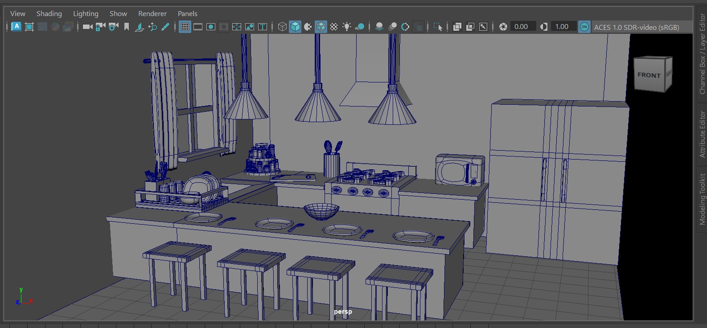
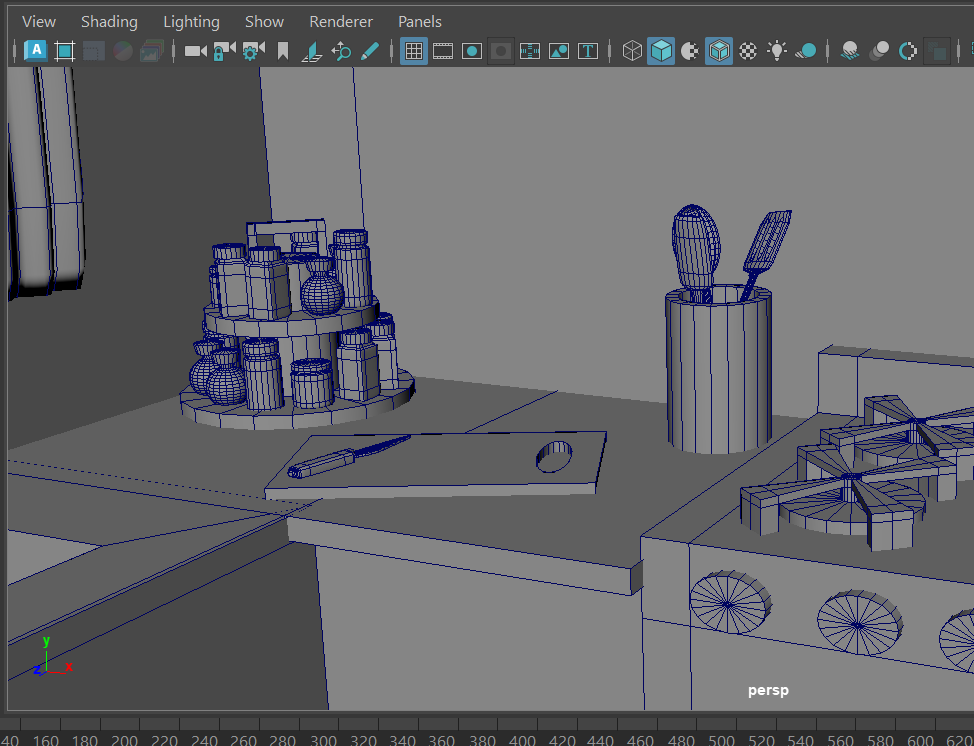
02 Texturing
The next step towards bringing my modeled kitchen environment to life was creating detailed textures for each object. My focus was to make sure my textures would look realistic in close-up shots. I wanted each material, from appliances to smaller household objects, to contribute to the overall realism of the scene.
One of the most successful parts of this process was texturing the oven. I was especially happy with the final details on the griddle, oven door, and knobs, which helped create a more realistic and polished appliance. A challenge I encountered was UV mapping, especially with curved objects like utensils and spice containers. Figuring out where to place UV cuts and how to unwrap these objects efficiently required lots of trial and error until I finally got a better understanding of how textures are applied to 3D models.
Based on critique feedback, I fixed parts of the environment by adjusting proportions, lowering the floor placement, and retexturing the lower cabinets to include more detailed drawer elements. This step in the process allowed me to gain a stronger understanding of UV mapping and how important it is to create clean textures.
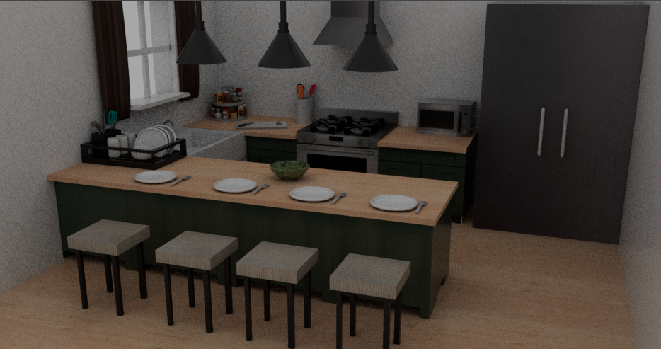
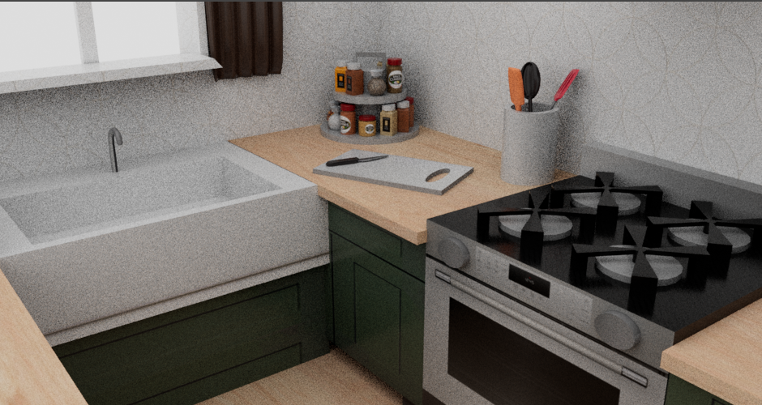
03 Character Modeling & Rigging
The next challenge I had to face was designing my first character model and creating a functional rig. I wanted my strawberry character to have a cute and cartoony feel that would contrast with the realistic kitchen environment. My goal was to develop a simple but effective rig that would allow the character to perform basic movements that would allow me to animate her dancing sequence at the end of the film.
One of the strongest parts of this project was creating custom controls that made the rig easier to animate. I developed a sliding control system by setting limits on a NURBS circle, allowing the strawberry to smoothly move from different points on the character body. This allowed the strawberry to wiggle side to side and create a variety of simple dance moves.
This helped me better understand the relationship between modeling, rigging, and animation. While the final rig achieved its intended movement, in the future I would continue improving it by adding more expressive features.
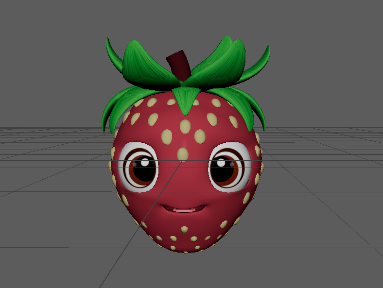
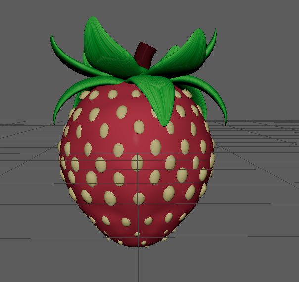
04 Storyboarding
The storyboarding stage helped establish the visual direction of my short film by planning the sequence of events, camera shots, and overall pacing before beginning the animation process. I used quick sketches to map out how the strawberry would move through the kitchen environment and how each shot would contribute to the storytelling.
The main focus of my storyboarding process was experimenting with different camera angles and shot types. I tested different focal lengths and incorporated a variety of camera angles to see what worked best for each shot. Some of the final shots I used included a wide shot to establish the kitchen environment, medium shot to follow the strawberry’s movements, and a close-up shot to highlight the strawberry's expressions.
Through this process, I learned how camera placement and lens choices can influence the mood and storytelling of a scene. Planning shots before animating allowed me to create a stronger visual flow and make intentional decisions about what the audience should notice. This storyboard became an important foundation for creating my 3D animatic and later refining the final animation.
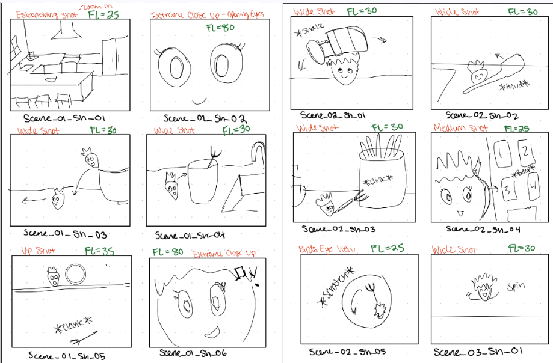
05 Animatic
The animatic stage allowed me to finally translate my initial ideas into rough 3D movement. It gave me the chance to establish the timing of each of my shots before creating the final animation. Using Maya’s Playblast feature, I created a simplified version of the film by testing camera shots, character movements, and the overall pacing of each scene.
During this stage, I created rough keyframe animations using both a red sphere and the strawberry character. The red sphere allowed me to quickly block out the timing and movement of each shot before focusing on the more detailed character animation. Once the timing felt correct, I replaced the sphere with the strawberry character to test how her movements worked within the environment and how the rig would perform during different actions.
A major challenge of this step was timing the strawberry’s movements with the music. I experimented with keyframe placement and frame timing to make sure important movements aligned with specific beats in the song.
One of my biggest discoveries during this stage was learning how to efficiently reference my environment scene for each shot and how to convert between frames and seconds when planning animations. The animatic allowed me to identify timing issues early, make adjustments to the sequence of events, and create a stronger foundation for the final animation.
06 Lighting & Final Rendering
The final step in my short film process was establishing the final lighting for each shot and rendering all the individual frames. My focus was on creating a consistent kitchen lighting setup that could be reused throughout the film while adding scene-specific adjustments when needed.
One of the most successful aspects of my lighting process was creating natural sunlight coming through the kitchen window. I was able to create a warm atmosphere while still maintaining clear visibility throughout the environment. The sunlight also helped add depth to the scene by creating realistic highlights and shadows, especially around areas like the sink and countertops.
A challenge I encountered was creating realistic reflections on metallic objects, especially the forks. My original metal texture did not interact with the lighting the way I expected, so I adjusted the shader by refining the metalness and roughness values to create a more accurate reflective surface. I also incorporated critique feedback by improving UV issues, using CatClark smoothing instead of relying on viewport shortcuts. Through this step I gained a better understanding of how area lights, positioning, and exposure settings can influence the mood of a scene.
Once all the lighting and render tests were complete, I rendered the final shots and edited my final film together in Adobe After Effects.
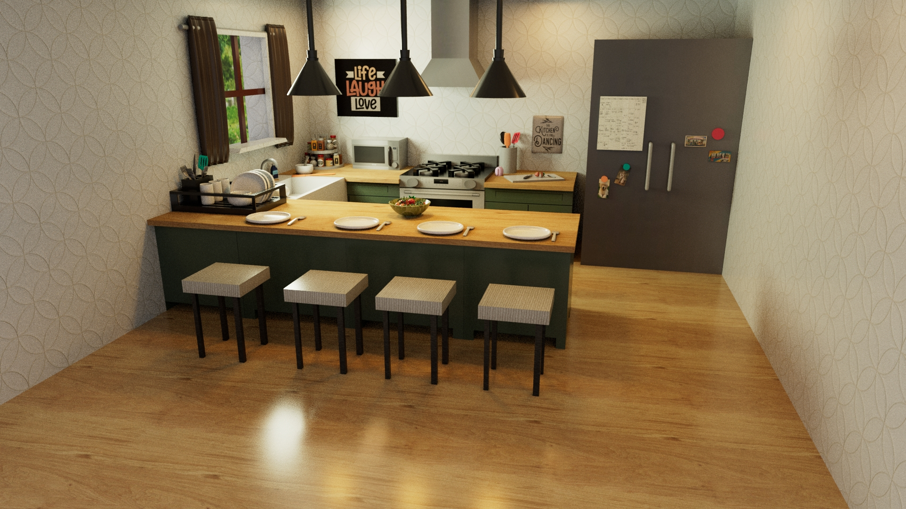
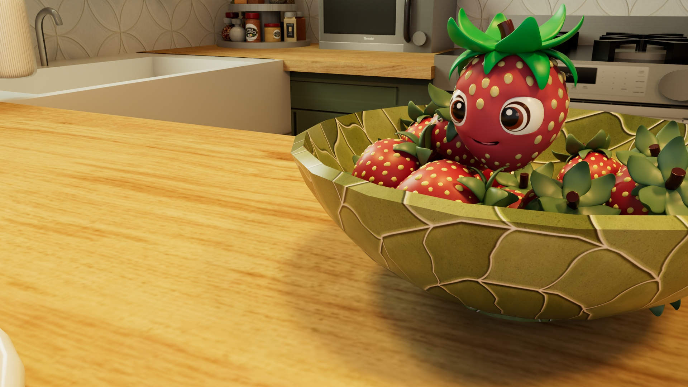
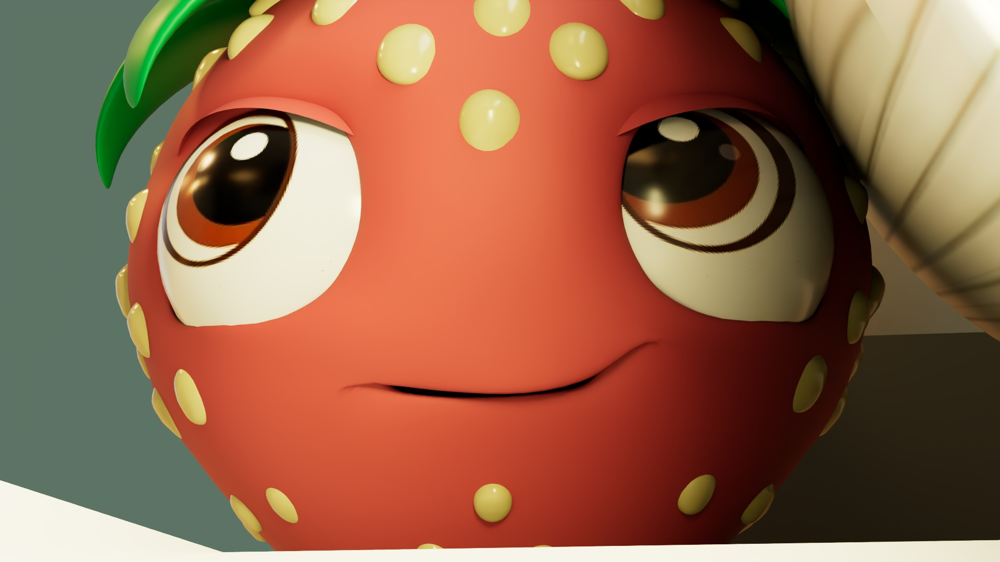
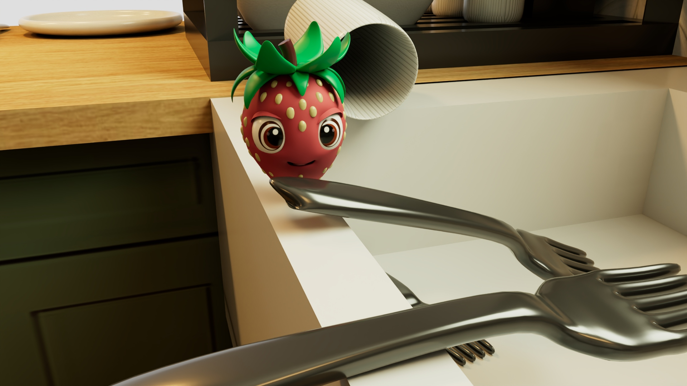
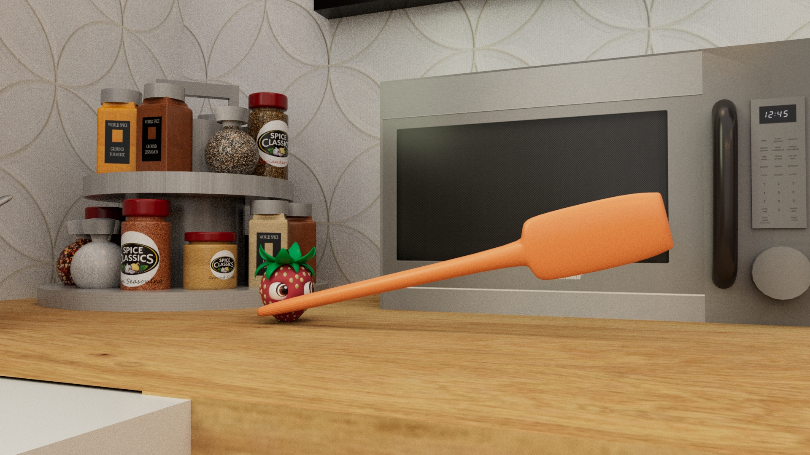
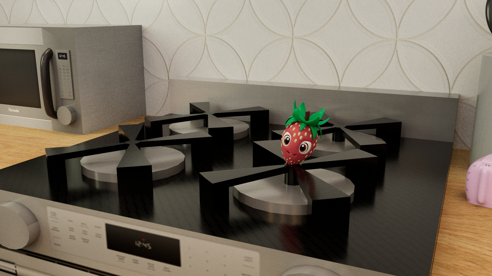
Challenges & highlights
One of the strongest aspects of my final film was how the sound worked alongside the visuals to help tell a cohesive story. Matching the audio with the strawberry’s movements and expressions throughout different scenes helped strengthened the overall storytelling of my film.
Throughout production, I faced challenges in each stage of the animation process. During modeling and texturing, I worked through difficulties with creating smaller detailed objects, UV mapping curved surfaces, and developing realistic materials. In rigging, connecting controls to the skeleton required troubleshooting, but helped me better understand how constraints and animation controls work together. During the animatic and lighting stages, I focused on improving timing, camera composition, and creating consistent warm kitchen lighting that could be carried across multiple shots.
The final stages of rendering and editing also introduced new challenges, including remembering to adjust render settings for each shot. After completing some renders, I realized the settings needed to be improved and had to re-render certain sections of the film. Class feedback throughout critiques helped me refine the story flow, improve the environment details, and add more movement and expression to the strawberry’s final dance sequence.
If I were to continue developing this project, I would revisit the character rig and improve the controls to create more complex movements more efficiently. Overall, this project was such a great learning experience, allowing me to understand and work through the complete 3D animation pipeline. I now understand the importance of each stage in the pipeline and the large amount of work that goes into creating a polished final film. Thank you to my professor, Liz Hejny, and OSU ACCAD for such an impactful project.